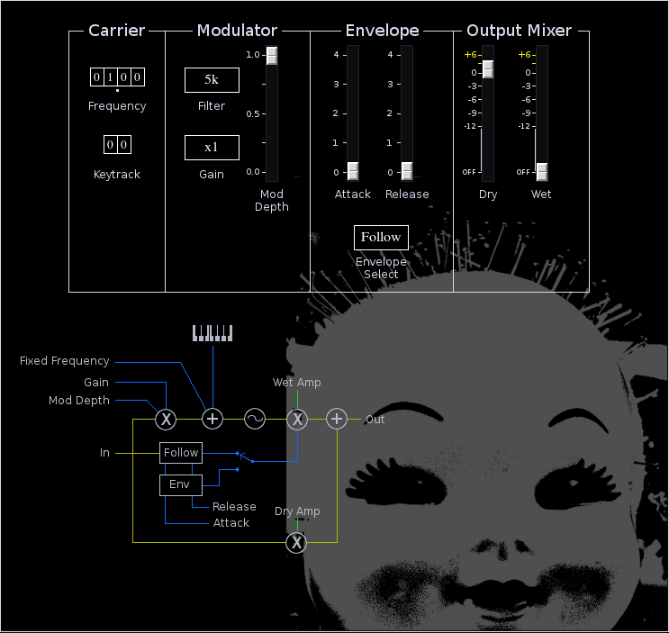

Qmod

| Home | Contents | Synth Catalog | Previous: Prism Crossover | Next: Ring Modulator |
QMod is a weird little effect which uses an external signal to frequency modulate a sine wave. It is usually dissonant.
 Carrier:- Frequency tumbler, fixed carrier frequency in Hertz.
- Keytrack tumbler, carrier keyboard track. QMod can function as a very simple monophonic synth.
- Filter button, fixed filter cutoff
- Gain, pre-envelope follower gain
There are two envelope generators, a simple attack/release curve and an envelope follower. Only one envelope may be used at a time.
- Attack time
- Release time
- Select button, select between AR envelope and envelope follower.
- Dry - dry signal mix
- Wet - wet signal mix
| Home | Contents | Synth Catalog | Previous: Prism Crossover | Next: Ring Modulator |